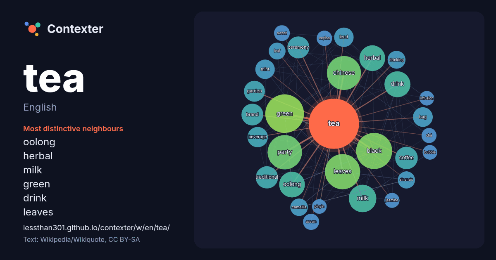

English · word of the day list
tea
The words found around it in 2131 instances from English Wikipedia, Wikiquote and Hacker News.

Most distinctive neighbours
- oolong 57×
- herbal 56×
- milk 54×
- green 53×
- drink 47×
- leaves 42×
- chinese 40×
- coffee 37×
- beverage 33×
- iced 33×
- black 32×
- mint 31×
- bag 29×
- camellia 27×
- ceremony 26×
- sinensis 26×
- brand 24×
- drinking 24×
- assam 21×
- leaf 21×
× = how many times more often than in general English Wikipedia text.
Most frequent neighbours
- green 126
- black 110
- leaves 105
- party 100
- chinese 98
- company 73
- cup 65
- milk 64
- drink 57
- herbal 56
- oolong 56
- white 54
- coffee 43
- traditional 42
- ceremony 41
- brand 40
- american 38
- culture 37
- garden 37
- type 37
In context
- Tea is an aromatic beverage prepared by infusion of hot or boiling fresh water with fresh or cured leaves of Camellia sinensis, an evergreen shrub native Wikipedia snippets · Tea
- Look up Tea, tea, or TEA in Wiktionary, the free dictionary. Tea is a beverage made from steeping the processed leaves, buds, or twigs of the tea bush in Wikipedia snippets · Tea (disambiguation)
- The Boston Tea Party was an act of protest that took place on December 16, 1773, during the American Revolution. Initiated by the Sons of Liberty in Boston Wikipedia snippets · Boston Tea Party
- The Tea Party movement was an American right-wing, fiscally conservative political movement within the Republican Party that began in 2007, catapulted Wikipedia snippets · Tea Party movement
- Herbal teas or herb teas, technically known as herbal infusions and less commonly called tisanes, are beverages made from the infusion or decoction in Wikipedia snippets · Herbal tea
- Mint tea is a herbal tea made by infusing mint leaves in hot water. Mint tea can be brewed with fresh leaves, or with dehydrated leaves that have been Wikipedia snippets · Mint tea (herbal tea)
- Tea, officially Tea Dating Advice, is a mobile phone application that allows women to post personal data about men they are interested in or are currently Wikipedia snippets · Tea (app)
- Bubble tea (also known as pearl milk tea, bubble milk tea, tapioca milk tea, boba tea, or boba; Chinese: 珍珠奶茶; pinyin: zhēnzhū nǎichá, 波霸奶茶; bōbà nǎichá) Wikipedia snippets · Bubble tea
More English words
- art
- autumn
- bell
- bread
- bridge
- cat
- city
- climate
- clock
- death
- desert
- dog
- family
- food
- forest
- garden
- god
- gold
- health
- heart
- history
- honey
- horse
- island
- language
- life
- map
- mirror
- money
- mother
- mountain
- nature
- power
- rain
- road
- salt
- science
- shadow
- silence
- song
- star
- storm
- summer
- time
- train
- truth
- water
- winter
- work
Precomputed on 2026-10-09 with default settings (±5 words, medium corpus). The interactive map can refresh it with live data.